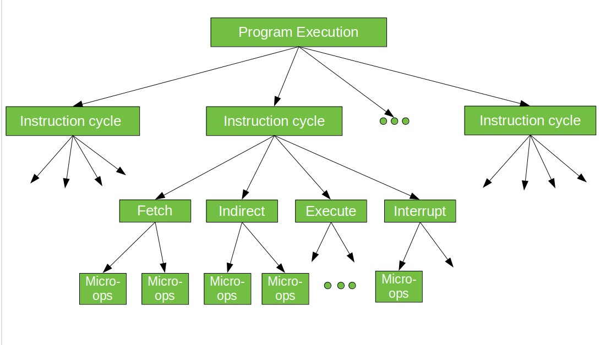

In computer central processing units, micro-operations (also known as micro-ops) are the functional or atomic, operations of a processor. These are low level instructions used in some designs to implement complex machine instructions. They generally perform operations on data stored in one or more registers. They transfer data between registers or between external buses of the CPU, also performs arithmetic and logical operations on registers.
In executing a program, operation of a computer consists of a sequence of instruction cycles, with one machine instruction per cycle. Each instruction cycle is made up of a number of smaller units – Fetch, Indirect, Execute and Interrupt cycles. Each of these cycles involves series of steps, each of which involves the processor registers. These steps are referred as micro-operations. the prefix micro refers to the fact that each of the step is very simple and accomplishes very little. Figure below depicts the concept being discussed here.

Summary: Execution of a program consists of sequential execution of instructions. Each instruction is executed during an instruction cycle made up of shorter sub-cycles(example – fetch, indirect, execute, interrupt). The performance of each sub-cycle involves one or more shorter operations, that is, micro-operations.
In my next article I will give detailed information of each Instruction Cycle.